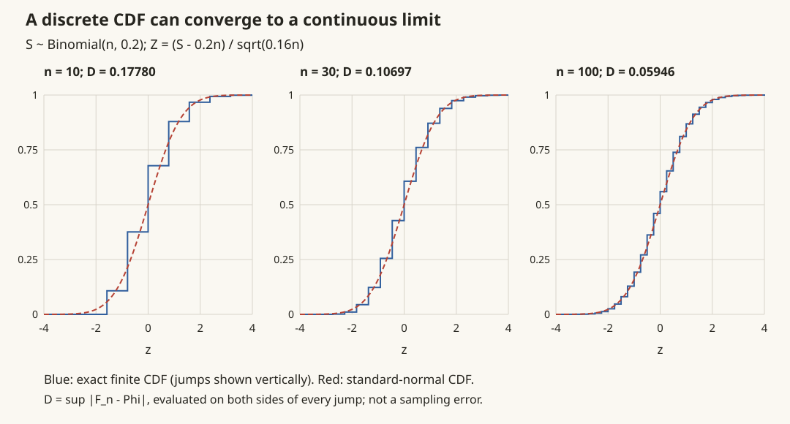

概率 V · 极限定理
概率论的收官页回答一个哲学级问题：为什么随机的世界里有稳定的规律？答案两条：大数定律（频率稳定到概率、平均稳定到期望——统计学存在的前提）与中心极限定理（大量独立扰动之和趋向正态——正态分布无处不在的原因）。工具是两把不等式和特征函数。
1. 两把不等式
Markov 不等式 \(X \geq 0\)：
一行证明：\(EX \geq E[X \cdot I_{X \geq a}] \geq a\,P(X \geq a)\)。
Chebyshev 不等式（对 \(|X - EX|\) 用 Markov）：
——只用期望方差就能给概率上界，分布未知时的兜底武器（代价是很松；分布已知时直接算）。🔗 ai 课 01 讲的 Hoeffding 不等式是它的指数级强化版（要求有界），泛化界一族全是这类"集中不等式"的后代。
2. 三种收敛
| 收敛 | 定义 | 强度 |
|---|---|---|
| 依概率收敛 \(X_n \xrightarrow{P} X\) | \(\forall\varepsilon:\ P(\lvert X_n - X\rvert \geq \varepsilon) \to 0\) | 中 |
| 几乎处处收敛 \(X_n \xrightarrow{a.s.} X\) | \(P(\lim X_n = X) = 1\) | 强 |
| 依分布收敛 \(X_n \xrightarrow{d} X\) | \(F_n(x) \to F(x)\)（\(F\) 的连续点） | 弱 |
关系：\(a.s. \Rightarrow P \Rightarrow d\)，均不可逆。（大数定律说的是前两种，CLT 说的是第三种——LLN 谈"值稳定"，CLT 谈"分布形状"，层次不同。）
3. 大数定律（LLN）
定理（Chebyshev 大数定律） \(X_1, X_2, \dots\) 两两不相关、方差一致有界，则
证明（两行）：\(D\big(\frac1n\sum X_i\big) = \frac{1}{n^2}\sum DX_i \leq \frac{C}{n} \to 0\)，代入 Chebyshev。——平均的方差以 \(1/n\) 消失，这个速率本身就是最有用的结论。
推论（Bernoulli 大数定律） 频率 \(\dfrac{n_A}{n} \xrightarrow{P} p\)——"频率稳定于概率"，把概率的频率解释变成定理。
定理（Kolmogorov 强大数定律） i.i.d. 且 \(E|X_1| < \infty\)，则 \(\frac1n\sum X_i \xrightarrow{a.s.} EX_1\)。（只要期望存在就成立，连方差都不要；证明超本科，记结论。）
🔗 AI 衔接：经验风险 \(\to\) 期望风险（ai 课 01 讲 ERM 的合法性）、Monte Carlo 估计的相合性、mini-batch 梯度是全梯度的无偏估计——机器学习"用样本代替总体"的一切操作都由 LLN 背书。
4. 中心极限定理（CLT，概率论皇冠）

定理（Lindeberg–Lévy） \(X_1, X_2, \dots\) i.i.d.，\(EX_1 = \mu,\ DX_1 = \sigma^2 < \infty\)，则
读法：不管单个 \(X_i\) 是什么分布（均匀、指数、二项……只要方差有限），大量独立同分布相加后标准化的和都长成标准正态——正态是"加法的普适吸引子"。
证明思路（特征函数三步，值得复述）：1.记 \(Y_i = \frac{X_i - \mu}{\sigma}\)，则标准化和的特征函数为 \(\big[\varphi_Y(\frac{t}{\sqrt n})\big]^n\)（独立和→乘积，概率 IV）；2.Taylor 展开 \(\varphi_Y(s) = 1 - \frac{s^2}{2} + o(s^2)\)（零均值单位方差决定前两阶）；3.\(\big[1 - \frac{t^2}{2n} + o(\frac1n)\big]^n \to e^{-t^2/2}\) ——恰是 \(N(0,1)\) 的特征函数，由唯一性定理收尾。\(\blacksquare\)（三步分别用了概率 IV 的三大功能——那一节是为这里铺的。）
推论（De Moivre–Laplace） 二项分布的正态近似：\(B(n, p) \approx N(np,\ npq)\)（\(n\) 大时；\(np, nq \geq 5\) 经验可用；精细计算加连续性修正 \(\pm 0.5\)）。
两个使用要点：
- 收敛速率：Berry–Esseen 定理给出偏差 \(O(1/\sqrt n)\)——"\(n \geq 30\) 近似可用"的老口诀的理论背景（偏态分布要更大的 \(n\)）；
- Monte Carlo 误差条：估计量 \(\bar X\) 近似 \(N(\mu, \frac{\sigma^2}{n})\) ⇒ 误差按 \(\frac{1}{\sqrt n}\) 收缩——精度多一位小数，样本多一百倍。🔗 这就是 ai 课 08 讲 self-consistency 采样收益递减、以及一切模拟实验样本量设计的定量依据。
5. 典型例题
例 1（Chebyshev 兜底） \(EX = 100, DX = 10\)，估计 \(P(80 < X < 120)\)。 解：\(P(|X - 100| \geq 20) \leq \frac{10}{400} = 0.025\) ⇒ \(P \geq 0.975\)。（若已知正态则精确值远高——兜底不等式的"松"要有体感。）
例 2（CLT 标准应用） 某保险公司 10000 名投保人，每人年理赔概率 0.006，每次理赔 1 万元。求总理赔超 80 万元的概率。 解：理赔人数 \(S \sim B(10^4, 0.006)\)，\(ES = 60, DS = 59.64\)。\(P(S > 80) \approx 1 - \Phi\big(\frac{80 - 60}{\sqrt{59.64}}\big) = 1 - \Phi(2.59) \approx 0.0048\)。——保险定价的原型计算：个体极不确定，总体高度可测，这就是 LLN+CLT 的商业模式。
例 3（用 CLT 设计样本量） 想用 Monte Carlo 把某均值估到 \(\pm 0.01\) 内（95% 置信），单样本 \(\sigma \approx 1\)，需多少样本？ 解：\(1.96\frac{\sigma}{\sqrt n} \leq 0.01 \Rightarrow n \geq (196)^2 \approx 3.8\times 10^4\)。\(\blacksquare\)
概率论五页完工。它的两个直系后继在侧栏等着：数理统计（把本页的极限定理变成推断工具）与随机过程（让随机变量随时间演化）——占位页均已备好规划。